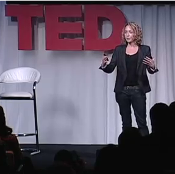

Kathryn Schulz: Don't regret regret
Perma🔗 (via Cameron Moll)

An interesting, extended example of her own regret on a tattoo, but how regret should impact the rest of us:
"If we have goals and dreams and we want to do our best, and if we love people and we don't want to hurt them or lose them, we should feel pain when things go wrong. The point isn’t to live without any regrets, the point is to not hate ourselves for having them... We need to learn to love the flawed, imperfect things that we create, and to forgive ourselves for creating them. Regret doesn't remind us that we did badly — it reminds us that we know we can do better."
Well said.